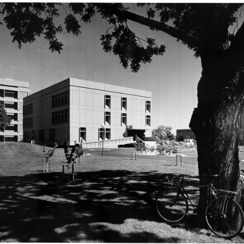
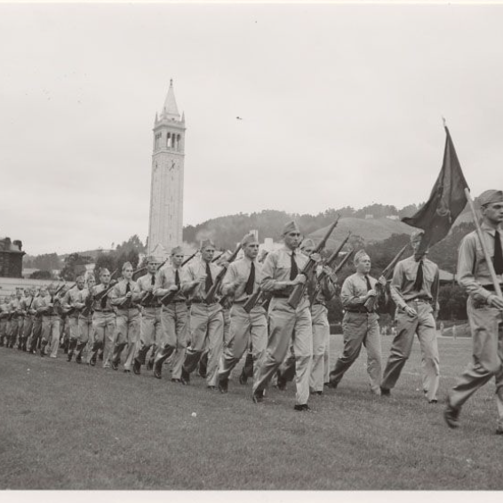
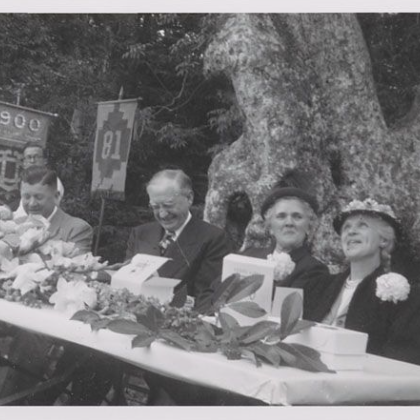

During World War II, Extension classes and correspondence courses became an important way for service personnel to continue their education. As part of the war effort, Extension’s DirectorProfessor Baldwin Munger Woods took over the Engineering Science Management Defense Training(ESMDT) Program. By the end of the war, hundreds of thousands of research dollars poured intoCalifornia, spawning new industries and, once again, dramatically increasing the population. UCLAExtension met the critical need for retraining mandated by Southern California’s burgeoning aerospace industry, while UC Berkeley Extension expanded its business and engineering courses across the state. Growth also meant an increased demand for teachers. Extension responded by developing an emergency teacher training program that enabled new teachers to satisfy the state’s credential requirements.With the new UC Santa Barbara campus, a new Extension began offering classes in 1944. All the while, important new programs were developed and implemented. Continuing Education of the Bar(CEB), for example, was established in 1947 by the Regents of the University and the State Bar ofCalifornia. Today it is one of the country’s largest continuing education programs for lawyers.

Physical Sciences and Engineering Library

Military students drilling on field east of Sproul Hall, 1943

Governor Earl Warren, William Hale, Mrs. Warren and Mrs. Hale